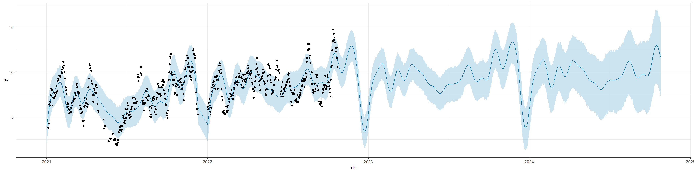
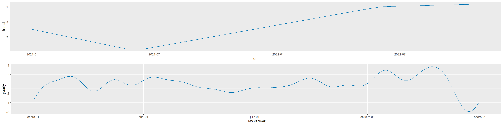

6 Prophet
Prophet es un poderoso algoritmo de predicción desarrollado por Facebook que se utiliza ampliamente en el análisis de series de tiempo, su enfoque se basa en descomponer las series temporales en tres componentes principales: tendencia, estacionalidad y días festivos. Esto facilita la modelización de patrones complejos y la generación de pronósticos precisos. Prophet es especialmente útil cuando se trabaja con datos de series de tiempo que pueden tener tendencias no lineales y efectos de estacionalidad irregulares. Además, con Prophet, es posible realizar pronósticos precisos y tomar decisiones informadas.
6.1 Modelo
El modelo subyacente es el propuesto por Harvey & Peters (1990):
y(t)=g(t)+s(t)+h(t)+ϵt
df: dataframe growth: tipo de tendencia: lineal o logistica yearly.seasonality: hay estacionalidad anual? yearly.seasonality: hay estacionalidad diaria? holidays: dataframe con fechas de vacaciones/eventos especiales
A continuación, cargaremos las siguientes librerías necesarias para utilizar el algoritmo Prophet:
library(prophet)
library(Rcpp)
library(rlang)Generamos la data del promedio de suavización exponencial
head(data_con_promedio, n = 20)## Fecha Calificación promedio
## 1 2021-01-01 8 NA
## 2 2021-01-02 1 NA
## 3 2021-01-03 1 NA
## 4 2021-01-04 4 3.857143
## 5 2021-01-05 5 3.714286
## 6 2021-01-06 4 4.285714
## 7 2021-01-07 4 6.428571
## 8 2021-01-08 7 6.285714
## 9 2021-01-09 5 6.714286
## 10 2021-01-10 16 7.428571
## 11 2021-01-11 3 8.142857
## 12 2021-01-12 8 8.000000
## 13 2021-01-13 9 8.000000
## 14 2021-01-14 9 6.285714
## 15 2021-01-15 6 7.142857
## 16 2021-01-16 5 7.142857
## 17 2021-01-17 4 7.142857
## 18 2021-01-18 9 7.714286
## 19 2021-01-19 8 7.142857
## 20 2021-01-20 9 7.285714Se crea un nuevo DataFrame llamado new_dataprom seleccionando solo las columnas ‘Fecha’ y ‘promedio’ del DataFrame original data_con_promedio. Se renombran las columnas del DataFrame new_dataprom. La columna ‘Fecha’ se renombra como ‘ds’ y la columna ‘promedio’ se renombra como ‘y’. Esto sugiere que los datos se están preparando para ser utilizados con el algoritmo Prophet de predicción de series de tiempo de Facebook, ya que Prophet espera que las columnas que contienen la fecha y el valor objetivo se llamen ‘ds’ y ‘y’, respectivamente. Este código facilita la preparación de datos para su uso con Prophet, una herramienta de pronóstico de series de tiempo, asegurando que los datos estén en el formato adecuado antes de aplicar el algoritmo.
new_dataprom <- data_con_promedio[c('Fecha', 'promedio')]
colnames(new_dataprom) <- c('ds', 'y')
# ------------
# df <- data.frame(datos_sumados)
# colnames(df) <- c('ds', 'y')
datos_sumados_a <- new_dataprom
head(datos_sumados_a, n=20)## ds y
## 1 2021-01-01 NA
## 2 2021-01-02 NA
## 3 2021-01-03 NA
## 4 2021-01-04 3.857143
## 5 2021-01-05 3.714286
## 6 2021-01-06 4.285714
## 7 2021-01-07 6.428571
## 8 2021-01-08 6.285714
## 9 2021-01-09 6.714286
## 10 2021-01-10 7.428571
## 11 2021-01-11 8.142857
## 12 2021-01-12 8.000000
## 13 2021-01-13 8.000000
## 14 2021-01-14 6.285714
## 15 2021-01-15 7.142857
## 16 2021-01-16 7.142857
## 17 2021-01-17 7.142857
## 18 2021-01-18 7.714286
## 19 2021-01-19 7.142857
## 20 2021-01-20 7.285714Se procede a realizar el siguiente modelo configurado para tener una estacionalidad anual con 13 términos (para adaptarse a patrones anuales), mientras que se deshabilita la estacionalidad semanal y diaria; Además, se establece el modo de estacionalidad en ‘additive’, lo que significa que el modelo asume que las estacionalidades se suman de manera lineal a la tendencia. Por otro lado, se generan 2 años (2*365 días) de fechas futuras con una frecuencia diaria (‘day’) en función de la información proporcionada por el modelo m.
Por último, se genera un gráfico que muestra tanto los datos originales como las predicciones del modelo m. Esto ayuda a visualizar cómo se comparan las predicciones del modelo con los datos históricos. La función theme_bw() se utiliza para aplicar un tema de gráfico en blanco y negro.
m <- prophet(datos_sumados_a, yearly.seasonality = 13, weekly.seasonality = FALSE, daily.seasonality = FALSE, seasonality.mode = 'additive')
future <- make_future_dataframe(m, periods = 2*365, freq = 'day')
forecast <- predict(m, future)
plot(m, forecast) + theme_bw()
prophet_plot_components(m, fcst=predict(m, datos_sumados_a)) + theme_bw()
## NULLSe evidencia una coherencia notoria en el pronóstico, ya que la incidencia de vandalismo en el sistema de transporte MIO muestra una clara relación con la temporada del año. Durante los meses de junio a agosto, así como en diciembre, se observa una disminución pronunciada en las proyecciones de vandalismo. Al utilizar Prophet, hemos podido obtener una visión más clara de cómo se comportarán los datos en el futuro, lo que puede ser muy beneficioso para la toma de decisiones y la planificación estratégica, la capacidad de Prophet para generar intervalos de confianza también brinda una idea de la incertidumbre asociada con las predicciones, lo que permite una toma de decisiones más informada.